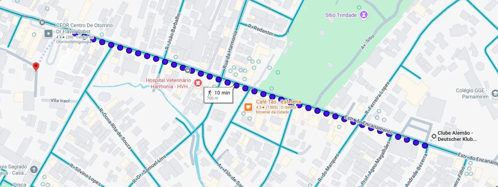

Diagnóstico de defeitos do pavimento
Estrada do Encanamento · Recife / PE
Memorial fotográfico
Nove ocorrências registradas nas vistorias de 03, 04 e 06 de outubro de 2026
Cada fotografia traz, gravada na própria imagem, a data, a hora, o endereço aproximado e as coordenadas geográficas obtidas em campo (precisão informada de ±14 m). Clique em uma foto para ampliá-la, ou use Ver na via para abrir a ocorrência no modo imersivo.
Fichas das ocorrências
Mapa de danos — planta e detalhes
Representação em planta das nove ocorrências, com hachuras por tipo de defeito
Planta linear do trecho — estaqueamento e localização dos defeitos
Arraste a prancha para a direita para percorrer os 635 m do trecho.
Legenda de hachuras
Detalhes ampliados — um por ocorrência
Cada detalhe mostra a ocorrência em planta, posicionada na seção transversal real da via, com as cotas em metros e a escala gráfica. A seção adotada é: ciclofaixa 1,50 m · faixa de rolamento 3,25 m · faixa junto ao meio-fio 3,25 m · sarjeta 0,50 m — plataforma de 8,50 m entre meios-fios.
Mapa de possíveis causas
Onde cada agente deflagrador atua ao longo da via
O mapa abaixo repete a planta linear, mas agora cada ocorrência é lida pelos agentes que a deflagraram. As faixas de fundo mostram as duas zonas de concentração identificadas no levantamento: a faixa junto ao meio-fio, por onde trafegam os ônibus e caminhões, e a sarjeta, onde a água se acumula. Seis das nove ocorrências estão sobre essas duas faixas.
Planta temática de causas
Os quatro agentes
Ciclo de degradação observado na via
A sequência abaixo é a leitura que o conjunto das nove ocorrências permite fazer: o mesmo processo aparece em estágios diferentes ao longo do trecho — da malha de fadiga ainda fechada (defeito 04) até a cavidade aberta com água dentro (defeito 06).
Matriz defeito × agente deflagrador
| Defeito | Água / drenagem | Tráfego pesado | Envelhecimento | Reparo inadequado |
|---|
Diagnóstico de defeitos do pavimento
Cliente: Pedro Oliveira Engenharia – PoliEng · Ofício nº 001/2026 · Norma DNIT 005/2003 – TER
Dados da vistoria
Croqui do trecho estudado

Como o levantamento foi feito
Inspeção visual
Percurso a pé pela via, com observação do revestimento, dos bordos, do meio-fio, da sarjeta e dos dispositivos de drenagem.
Registro fotográfico
Fotografia de cada ocorrência com aplicativo que grava na imagem a data, a hora, o endereço aproximado e as coordenadas (precisão informada de ±14 m).
Classificação DNIT
Codificação de cada defeito conforme a DNIT 005/2003 – TER. Trincas enquadradas em FC-1, FC-2 e FC-3; a severidade é critério da equipe, não previsto na norma.
Mapeamento
Coordenadas plotadas em planta e projetadas sobre o eixo da via, com a distância de cada ocorrência medida a partir do defeito 06, o mais a oeste.
Classes de trincas isoladas: FC-1 — abertura até 1,0 mm · FC-2 — acima de 1,0 mm sem erosão nas bordas · FC-3 — acima de 1,0 mm com erosão nas bordas.
Comprovação da vistoria presencial — registros georreferenciados na própria via
Estr. do Encanamento, 785
Estr. do Encanamento, 455
Estr. do Encanamento, 271
Estr. do Encanamento, 233
Síntese
O levantamento identificou nove ocorrências de sete tipos distintos pela terminologia da Norma DNIT 005/2003 – TER (J, JE, P, RS, D, ALP e O), registradas nas vistorias de 03, 04 e 06 de outubro de 2026, com registro fotográfico georreferenciado.
Seis das nove ocorrências (06, 07, 11, 15, 16 e 19) estão na faixa junto ao meio-fio ou na própria sarjeta — justamente onde a água se acumula e por onde trafegam os ônibus e caminhões. Três agentes predominam: a água mal drenada junto ao meio-fio, o tráfego pesado concentrado nessa faixa e o envelhecimento do revestimento, agravado por reparos que não trataram a origem dos problemas.
Por se tratar de avaliação exclusivamente visual, não foram realizadas medições, sondagens ou ensaios. As conclusões sobre as camadas inferiores são inferências a partir do tipo e da posição dos defeitos e devem ser confirmadas por investigação específica, com sondagens e ensaios.
Quadro-resumo das ocorrências
| Nº | Cód. | Defeito | Classe / severidade | Posição na via | Dist. |
|---|
Referências
- DNIT. DNIT 005/2003 – TER: defeitos nos pavimentos flexíveis e semirrígidos — terminologia. Rio de Janeiro: IPR, 2003.
- DNIT. DNIT 106/2009 – ES: terraplenagem — cortes. Rio de Janeiro: IPR, 2009. · DNIT 108/2009 – ES: terraplenagem — aterros. Rio de Janeiro: IPR, 2009.
- DNIT. Manual de drenagem de rodovias (IPR 724) e Manual de restauração de pavimentos asfálticos (IPR 720). 2. ed. Rio de Janeiro: IPR, 2006.
- BERNUCCI, L. B. et al. Pavimentação asfáltica: formação básica para engenheiros. Rio de Janeiro: Petrobras; ABEDA, 2006.
- BRASIL. CONAMA. Resolução nº 307, de 5 de julho de 2002. Gestão dos resíduos da construção civil. Brasília, 2002.
- CONTRAN. Manual Brasileiro de Sinalização de Trânsito: volume IV — sinalização horizontal. Brasília, 2007.
Norma de referência: DNIT 005/2003 – TER. Fotografias, coordenadas e desenhos: a equipe (2026).